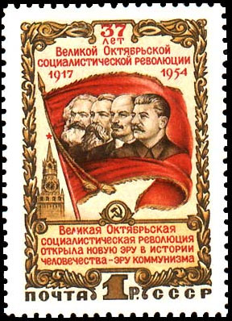
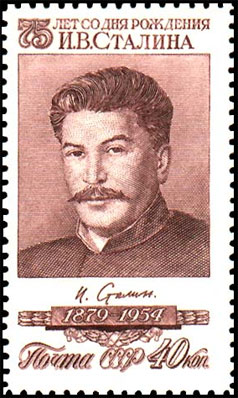
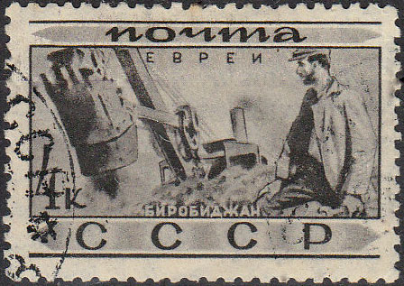
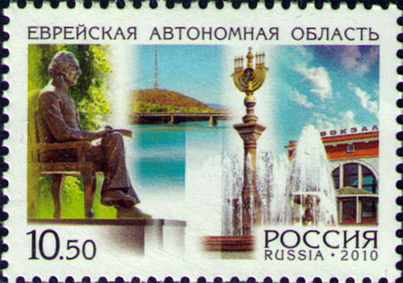
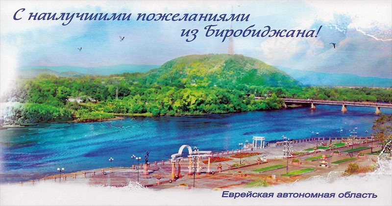

BIROBIDZHAN AND ANTI-SEMITISM IN USSR
(See you next year in... Birobidzhan)
A particularity of the communist authorities in USSR was the dealing with over hundred nationalities that lived in the former Russian Empire. Soon after the October 1917 revolution they were granted, at least on paper, a large territorial and cultural autonomy. The Jewish Autonomous Oblast (JAO; in Yiddish: Yidishe Avtonome Gegnt) was created in 1934 within the framework of Stalin’s nationality policy, centered on the town of Birobidzhan, along the Trans-Siberian Railway, close to Khabarovsk.


The creation of the JAO was meant to counter both Zionism and religious Judaism by creating an atheist, Soviet version of Zion, and further to settle the still sparsely populated Siberian lands bordering China.
A different view of the creation and location of the JAO is that it would make it possible to deport the Soviet Union’s entire Jewish population to one of the remotest corners of the country. Initially, Jewish pioneers were lured to Birobidzhan by a concerted propaganda effort, ranging from posters and pamphlets to movies and books.

Despite efforts to encourage Jews to resettle in the region during the first decade of its existence and again for a few years after the end of World War II, the Birobidzhan experiment failed dismally. Not only did the region fail to attract many Jews because of its remoteness from the center of Jewish population, but the harsh conditions kept significant numbers of Jews from migrating.
The growth of the JAO was cut short by Stalin’s purges before and after the Second World War, and by the war itself. Under the pretext of the fight against the so-called cosmopolitism and the pernicious influence of the West, tens of thousands of Jews lost their jobs and many of them were arrested on charges of espionage, then tortured and hundreds even shot by the secret police. Those who were very visible, especially abroad, had a fate similar to the Jewish actor and the artistic director of the Moscow State Jewish Theater Solomon (Shloyme) Mikhoels, who was run over to create the impression of a traffic accident.
The Doctors' plot (known also as doctors' affair, doctors-saboteurs, or murderers in white coats) was the most dramatic anti-Jewish episode in the Soviet Union during Joseph Stalin's regime, involving the "unmasking" of a group of prominent Moscow doctors, predominantly Jews, as conspiratorial assassins of Soviet leaders. This was accompanied by show trials and anti-Semitic propaganda in state-run mass media. Scores of Soviet Jews were promptly dismissed from their jobs, arrested, sent to the Gulag, or executed.
The purges also led to the burning of the entire Judaica collection in Birobidzhan’s local library.

In the decades following the war, many Birobidzhan Jews chose to leave it. In 2002, Jews constituted less than 2% of the region’s 200,000 inhabitants (90% Russian, 4% Ukrainian). Even fewer Jewish inhabitants knew Yiddish, and even fewer know it today. Birobidzhan's continued existence is a good example of the failed Soviet nationality policy, despite the "Best wishes from Birobidzhan" as written on the postcard shown below.

Birobidzhan today. Valeriya Bulkina, keeper of a Birobidzhan synagogue, describes the uniqueness of Birobidzhaners and of the synagogue community she's been responsible for. She explains how after their rabbi recounted a dream to her, she began to see a minyan made up of those who had left even when those that remained numbered less than ten. (Minyan: the quorum required for Jewish communal worship that consists of ten male adults in Orthodox Judaism). Source.
Created: 10/09/2011. Revised: 1/24/2024
Copyright © 2011 - 2024 by Victor Manta, Switzerland/USA.
All rights reserved worldwide.